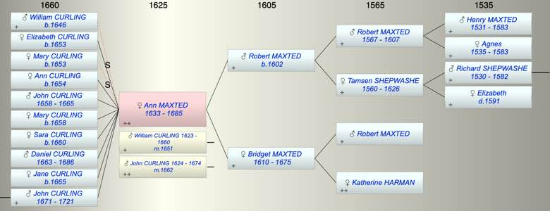

| [Index] |
| Ann MAXTED (1633 - 1685) |
|  |
| b. 1633 at St Laurence |
| m. (1) 27 Feb 1651 William (II) CURLING (1623 - 1660) at St Laurence |
| m. (2) 19 Jun 1662 John CURLING (1624 - 1674) at St Alphege, Canterbury |
| d. 1685 at St Laurence aged 52 |
| Parents: |
| Robert MAXTED (1602 - ) |
| Bridget MAXTED (1610 - 1675) |
| Siblings (1): |
| John MAXTED (1636 - 1700) |
| Events in Ann MAXTED (1633 - 1685)'s life | |||||
| Date | Age | Event | Place | Notes | Src |
| 1633 | Ann MAXTED was born | St Laurence | Note 1 | ||
| 27 Feb 1651 | 18 | Married William (II) CURLING (aged 28) | St Laurence | Note 2 | |
| 1653 | 20 | Birth of daughter Elizabeth CURLING | St Laurence | Note 3 | |
| 1654 | 21 | Birth of daughter Ann CURLING | St Laurence | Note 4 | |
| 06 Mar 1658 | 25 | Birth of son John CURLING | St Laurence | Note 5 | |
| 28 Aug 1658 | 25 | Birth of daughter Mary CURLING | St Lawrence | Note 6 | |
| 1660 | 27 | Birth of daughter Sara CURLING | St Lawrence | Note 7 | |
| 1660 | 27 | Death of husband William (II) CURLING (aged 37) | St Laurence | Note 8 | |
| 19 Jun 1662 | 29 | Married John CURLING (aged 38) | St Alphege, Canterbury | Note 9 | |
| 1663 | 30 | Birth of son Daniel CURLING | St Laurence | Note 10 | |
| 1665 | 32 | Birth of daughter Jane CURLING | St Laurence | Note 11 | |
| 1665 | 32 | Death of son John CURLING (aged 7) | St Laurence | Note 12 | |
| 1671 | 38 | Birth of son John CURLING | St Laurence | Note 13 | |
| 1674 | 41 | Death of husband John CURLING (aged 50) | Note 14 | ||
| 1675 | 42 | Death of mother Bridget MAXTED (aged 65) | St Laurence | ||
| 1685 | 52 | Ann MAXTED died | St Laurence | Note 15 | |
| Death of father Robert MAXTED | Note 16 | ||||
| Created on a Mac™ using iFamily for Mac™ on 8 Oct 2023 |